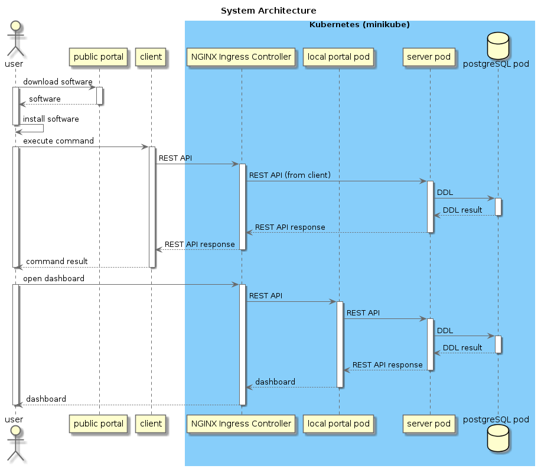

worker-monitor
System Archtecture
Worker-Monitor System Architecture
Softwares
Worker-Monitor Client
Worker-Monitor Server
Worker-Monitor Infrastructure
Worker-Monitor Portal
worker-monitor
Docs
»
Worker-Monitor System Architecture
View page source
Worker-Monitor System Architecture
¶
ここでは、Worker-Monitorのシステムアーキテクチャについて説明します。
